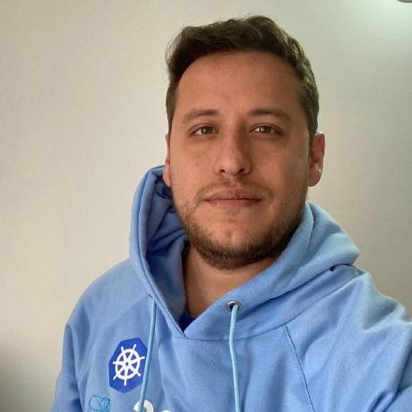

DevOps & SRE Engineer
8+ años optimizando infraestructuras críticas, automatizando procesos y reduciendo costos operacionales. Especialista en Kubernetes, Jenkins, Ansible y Cloud Architecture.
Ingeniero especializado en infraestructura moderna y operaciones en la nube. Mi pasión es transformar operaciones manuales en automatización inteligente, reduciendo costos y mejorando la confiabilidad de sistemas críticos.
DevOps & SRE: Diseño de pipelines CI/CD, automatización con Ansible, orquestación Kubernetes y optimización de costos cloud (FinOps).
Kubernetes · Docker · Jenkins · Terraform · Ansible · Python · AWS · Azure · Prometheus · Grafana · IA/ML para infraestructura
Impulsar transformación digital mediante infraestructura automatizada, observabilidad avanzada y arquitecturas cloud-native resilientes.
Años de Experiencia
Servidores Administrados
Disponibilidad
Certificaciones
— Actualidad
—
—
—
—
Revise aquí los certificados que he obtenido hasta el momento. Ver todos en Credly →
2019
ID: 190-028-894
2024
Certificate of Completion
2022
Certificate of Completion
2023
Harness University Course
2024
Certificate of Completion
Correo electrónico
giovannyorjuel2@gmail.comTeléfono
+57 311 479 3397Ubicación
Bogotá, Colombia